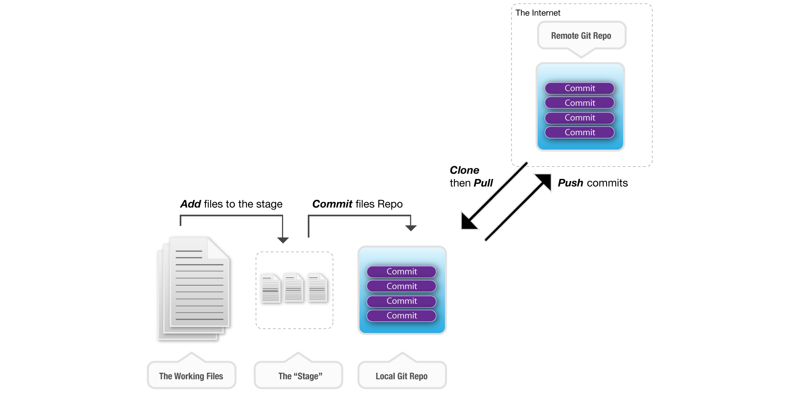

What we’ll Cover
- Pointers
- Ways to reference specific commits
- Navigating commit history
- Using
git checkout to change the repo head
- Finding errors in code with
git bisect
- Dealing with mistakes in past commits
- How NOT to approach past mistakes
- Properly reverting past mistakes
- Branching
- How git treats branches
- Local .vs Tracked
- Tagging
- Pointing to a commit with a tag
- Bringing it all together
- A common branching pattern
- Tagging all releases
- Deploying & QA with git
- Q & A
Pointers
A few common pointers:
- Head
- Always points to the most recent commit or "tip" on the current branch.
- [Branch Name] e.g Master
- Always points to the most recent commit or "tip" on the specified branch.
- Tag
- Allows you to point to a specific commit and can be used to mark important points in a project timeline.

Navigating commit history
Looking at different commits
- Use git log to show recent commits
$ git log
- Use git show to see a particular commit
$ git show [sha]
- eg. $ git show dj376dj3
- Use git checkout to change the current HEAD position and files in the working copy
$ git checkout [sha]
- eg. $ git checkout dj376dj3
Using git bisect to find coding errors
- Start bisecting
$ git bisect start
- Tell git which commit is good
$ git bisect good [sha]
- eg. $ git bisect good dj376dj3
- Tell git which commit is bad
$ git bisect bad [sha]
- eg. $ git bisect bad dj376dj3
- Tell git if each subsequent commit is good or bad
$ git bisect bad
$ git bisect good
- Once git points you to the culprit commit, you can reset to your original commit
$ git bisect reset
Fixing mistakes in past commits
Never edit commit history.
- Git allows you to edit past commits, but don't do it.
- Follow best practices and always "revert" past mistakes by simply making a new commit.
- Using git revert to undo a past mistake by creating a new commit
$ git revert [sha]